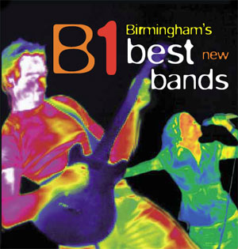

Okay, this is a piece of electronic incompetence of such glory that it has to be reported. Birmingham City Council’s marketing and/or PR department have put together a CD of music by some Birmingham bands. I’ll get onto that in a bit but the music is also available to download free from the council website. Currently if you go here and click on any of the download links you get a 1 second blurt from each track. Now, I know some bands only like to make samples of their work available for free but this is surely taking it to a new extreme.
(If you right-click save-as they do download in full. Sort of. I had to rename mine from Media.html to an mp3 so it would play. Music downloads have been around a while – this is not rocket science people.)
Is this a big deal? Well, the link went out with today’s Birmingham Bulletin and the CD is part of the big Feel The Heat campaign. So I’m guessing it is.
[Update: As of Thursday evening the downloads have been removed, possibly because of licensing issues.]
But what about the CD itself? Well, from a basic design point of view the cover is really badly reproduced. The image you see above is pretty much how it looks in reality with the edges all jaggedy like it’s been quickly enlarged in Photoshop from a thumbnail. Basically it looks kinda cheap.
The title of the CD is Birmingham’s Best New Bands but the “New” is so small I didn’t notice it for a while so it gives the impression this is the creme of the city’s offerings. There are some good acts on there but they’re all unsigned. No Editors or Twang, no Pram or Misty’s. Could it be that using unsigned bands is cheaper than the more successful ones? I’m not in any way denigrating the bands on the CD – some of them I’m a big fan of – but promoting them really shouldn’t be the council’s remit. The council should be promoting the city
The music itself covers “Indie Rock, Jazz and Acoustic” – no electronic, no metal, no Bhangra, no hiphop, no r&b, no dance, no loungecore, etc, etc. Not particularly representative of the city really.
More critically is what this CD is for. I understand the original brief was for it to be used internally at Council events. Why I’m not sure and I don’t pretend to understand the inner workings of our council but this would explain why it’s a CD and not something more novel like a branded memory stick filled with mp3s. However this plan morphed the disk being cover mounted on Music Week, the national trade paper for the industry. In other words this CD is telling the music world what Birmingham thinks of itself musically with, I gather, no accompanying article to put things in context. And getting a cover mount of Music Week is, as you’d imagine, not that cheap.
Am I over-reacting here? Well, I’ve heard from people in the industry who are spitting blood over this, or crying into their cranberry juice. One memorable phrase was “bizarro-clusterfuck”. But I’m in danger of spreading rumours now so I’ll stop.
Your thoughts?
It’s an ugly affair all round,
From the truly appalling graphics, the fact that the downloads on the BCC site are using some stone age system,
http://www.birmingham.gov.uk/b1.bcc
the fact that no one in the music industry in the City was consulted about the strategy, the fact that in the contract with artists who appear on the CD no mention is made that individual tracks were to be offered as a free download!
The cringe making press release on the BCC site:
http://www.birmingham.gov.uk/GenerateContent?CO…
The fact that these tracks were initially chosen by Tom Lawes following a brief from the City to prepare a CD to give away at City events to attendees whose average age would be over 40 – yep this is the same CD which Debra Davies – BCC director of communications! has single handedly re branded “The Best of Birminghamâ€.
Now it might have all slipped by as these things can and just left a few of us miserable and in despair but oh no it’s even worse. BCC have gone and put it as a cover mount on next week’s Music Week – the only national music industry magazine. Following the truly awful Birminghamusic CD and waffle in the same mag only earlier this year the music industry nationally is now going to be laughing at Birmingham again.
Some fine tracks on there from some artists I really like but representative? Forget it. Oh the shame of it all.
What is BCC playing at? Especially putting it in Music Week. This is as daft as me writing about BCC’s planning strategy in Town Planning Review, I wouldn’t as I don’t know anything about it. If only BCC had the same sensibilities.
Off to lie down in a darkened room.
–
Yes it’s an interesting one this issue! I too have seen a copy and can verify that BCC have no right to have ANY of the tracks on their website as either downloads OR steams!
Having seen a copy of the CD, there are none of the standard copyright statements you’d expect on an audio product.
I’m also curious whether BCC have applied for an MCPS license to press the 250,000 copies of this they’re entitled to manufacture under this contract? The Music Week covermount would surely require an AP7, and the general giveaway CD would require an SG3. That’s 5p per CD, or a £12,500 bill if BCC manufacture all 250,000 CDs.
It keeps saying ‘free download’ but I can’t work out how to?
You can get the download to work by waiting until the random blip has happened and then going to File > Save As… The file will save as something like “01 CD1 Track 01.mp3”
My two cents on the licensing issue is that BCC need to seek a second licence to cover downloads if they’re not explicitly set out in the contract, and I’m sure they would have made a provision for MCPS and yes the maths are correct on that size run. I don’t think Music Week shift that number of copies though…
One second tracks = Napalm Death = the music of Birmingham.
It all fits together perfectly…
RussL brings the ROLFcopter!!
Music Week’s official ABC weekly sales are only 7960 (the ABC site is great by the way; search for your favourite publication and marvel at how low its sales are).
We get it in the office and I await next week’s issue with baited breath now. I have yet to get round to listening the other Birmingham CD that was on it a few months back. That one had a design based on the London Underground map similar to, but without the wit of, the Birminghamitsnotshit one.
Music Week clearly has a small but influential readership. How many listen to the covermount I don’t know but this one really seems to have come out of the blue – we certainly had no idea here (not that we have an automatic right to know stuff but still).
Dave
Another small but some might say critical flaw in this – the contents of the CD haven’t been submitted to CDDB yet so when the Music Week readers go to rip it onto their iPods, etc they’ll have to enter the track names manually. The chances of them doing that? Pretty slim I’d guess.
As a comparion when I ripped the Moseley Folk Festival CD (sold for £3 with a program) all the tracks were there, so it’s not hard.
It worse and worse,
Just dug out my copy of the Birminghamusic CD that went as a covermount on music week in June this year. Lead track – ‘Money’ by Liner. Lead track on B1? Yep it’s ‘Money’ by Liner. Great track but it’s 3 years old!
My bet is that DD and Co didn’t even know that BCC, through Equal funding, had paid for a covermount in music week in June or surely they would not have lead with the same track.
Music Week must think we’re mugs.
“DD” would be Debra Davies, Director of Public Affairs and Communications at Birmingham City Council, just so people know.
I smell Lanval Storrod being involved somewhere in all this…..anyone willing to take bets? and BirminghamhamUSIC too…..ha ha ha haaaaaaaa
You couldn’t make this stuff up and expect people to believe it…..
Well, the CD is supposed to the “Birmingham’s Best New Bands” – in that respect it does what it says on the tin. If it was a CD of “Birmingham’s Best New DJs” then it wouldn’t. Perhaps it’s not supposed to reflect diversity, but instead to represent excellence in one genre, and one which is very popular and of the moment.
For your information, I happen to know for a fact that John Mostyn WAS offered the chance to get involved with this CD at the start, but wasn’t interested. Read – he wanted a consultancy fee but BCC didn’t want to pay him one. Now he’s grumpy that he wasn’t able to sew it up with the artists he would want to put on the cover of Music Week. Who made Mostyn the ultimate arbiter on what is worthy in the Birmingham music scene?
I also happen to know that a number of tastemakers in the Birmingham music industry were asked for their recommendations, like Janice Long from BBC Radio 2. She recommended The Mexicolas, Murdoch and Midas – and that’s just the M’s :)
Everyone seems to agree there are some great acts on the CD, so what is wrong with giving them a platform?
It always seems in Birmingham that whenever anyone tries to do something positive, it’s shot down in political flames by cronies who think they could do it better themselves. Well guys, if you think you could put a better CD on the cover of Music Week then why don’t you do it? You obviously have the connections to pull strings with various people, so why not do something for a change instead of shooting down people who are trying to do something good?
Well you know something that I don’t Tom Phillips. Please inform us when this offer was made to me as I missed it. As you’ve chosen to state it as a fact please back it up with who made an offer to me and what was it exactly?
Well, the CD is supposed to the “Birmingham’s Best New Bands†– in that respect it does what it says on the tin.
It’s sillt to try and play the semantics card when you’re on such shakey ground. “Birmingham’s Best New Bands” is not synonymous with “Some bands and singer-songwriters from a small selection of musical genres.” ‘Exactly what it says on the tin’ is not what is being done.
On one hand you’re saying it accurately represents the title “Birmingham‘s Best New Bands” and on the other you’re suggesting that it’s there to “represent excellence in one genre.” Which of these do you think is true? They are hugely different statements.
Okay Tom, here’s some more constructive questions.
What is the benefit of cover mounting a CD on music week? What value do such things have, given that most people in the music industry are swimming in the things? And how much does this cost?
Further to this, what value does a CD on it’s own with no accompanying article putting it in context have?
Would it not have been possible for the design of the CD to be a little less amateurish? From the pixelation of the cover to the repeating figures inside (albeit rotated ever so slightly). Not to mention the illegible font (I don’t think Blur was intended for blocks of text).
If the city’s tastemakers were consulted (and I have no reason to doubt this) then why not quote them on the CD? The two quotes are from Brian Travers of UB40 (okay though not very current really) and council leader Mike Whitby (that well known hipster).
That’ll do for now.
It’s not so much people shooting this down in political flames for the sake of it. It’s people wanting something good but smashing their heads against the walls wailing “what the fuck!” as another opportunity is spectacularly missed.
(My biggest criticism – it’s a CD. Stop making CDs. They’re redundant. Or if you are going to make a CD fill it with 140 mp3s and really represent Birmingham.)
Tom said “Well, the CD is supposed to the “Birmingham’s Best New Bandsâ€
excellent, what criteria did you use or what process did you go through to come up with “best new bands”?
Tom said
“to represent excellence in one genre, and one which is very popular and of the moment.”
again how was this decided upon? Press? sales? Radio play? Guess?
Tom Said
“For your information, I happen to know for a fact that John Mostyn WAS offered the chance to get involved with this CD at the start, but wasn’t interested.”
Do you have that in writing? Who else was invited to be involved, do they have Names? Who said yes and who said no? Did you consult local record labels? Local music promoters? Local music networks? any networks?
Did anyone go to The Music Network meetings and mention this CD? Creative networks? Any Networks? Digital Central?
Tom Said “I also happen to know that a number of tastemakers in the Birmingham music industry were asked for their recommendations.”
First of all what do you mean by the word “Tastemaker”
Is that critic, opinion leader, most powerful? What is it? Hello?
On the other point, thats great, if you happen to know then I’m sure you won;t mind revealing the list. I’ve just phoned all the people I know and none of my contacts had any involvement. Admittedly the phonecalls I made numbered about 3.
Tom said
“Everyone seems to agree there are some great acts on the CD, so what is wrong with giving them a platform?” can you tell me WHO agrees there are some great acts on the CD? Do they have Names? How many agree?
Tom Said”It always seems in Birmingham that whenever anyone tries to do something positive, it’s shot down in political flames by cronies who think they could do it better themselves.”
I think you’ve got it wrong Tom. I think most people are afraid to do anything that involves consultation as they want control and credit for what they do…they can’t have others telling them any different. It’s all about ticking boxes and maintaining effective control and management of a “spend” This is why Birmingham has struggled for so long. Things like “do your research” “Consultation” “formulate a strategy” execute your strategy” “evaluate and learn the lessons” never seem to be involved.
Tom Said “Well guys, if you think you could put a better CD on the cover of Music Week then why don’t you do it?”
No problem at all, give me the budget and I’ll happily organise it, and i’m sure everyone would be interested in contributing to the process. It’s not that difficult at all. I’ve released all sorts of cds in the last ten years on my own label and worked with many others.
Tom said “You obviously have the connections to pull strings with various people, so why not do something for a change instead of shooting down people who are trying to do something good?”
I think you’ll find I already am doing something good and I’ve had my fair share of cronies on my back too….but my job is made so much harder by jokers jumping in and making Birmingham a harder place to work in. If you would like my CV and a list of things I have been doing since 1996 I would be happy to supply it.
If you would be interested in consulting with me FOR FREE next time please do so. But if you prefer me to bill you for my time I can arrange that.
And so silence on this B1 CD project, no further comments….and its all too late.
How many more “projects” like this compilation CD will continue to waste money, time and resources.
How many more “projects” will be initiated without proper research, consultation, strategy, evaluation.
When is someone going to come out and just say the word “failure” or “we don’t actually know what we’re doing” or “it hasn’t worked” or “we wasted the money” or “we spent it on admin” or ” we took the wages, took the holiday and took you all for a ride”
When is someone going to admit to these funded projects being just “window dressing on a sinking ship?”
When will the excuses, the spin, the justification, the stupid reasons stop?
When will we just get a straight admission of failure?
When are these people going to get out of the way so the rest of us can get on with more important work?
Is this what “BE” in Birmingham is all about
Be fXXked by the people in charge of the funding?
Is this what Birmingham “the creative city” is all about? Creative use of public funds/European funds to give ourselves an easy interesting job at the expense of everyone else?
Birminghamusic, creative management, creative launchpad, creative alliance, creative insight, gigbeth, and all the rest…. When are these projects going to be exposed for what they really are and what they actually do…or don’t do as the case may be….When are the jokers going to be cleared aside so the individuals and companies who do the REAL work in the region can get on and make a success of something without being marginalised by the sheer volume of noise being generated by these funded projects that as far as I can see have done nothing that isn’t already happenning anyway.
I don’t want to hear anymore about what these projects are doing to promote growth in the region. What is it again? 11% growth every year thanks to all these projects? 15%? 20%? Has anyone got an accurate figure?
I want all of these projects to be removed for 12 months in order to demonstrate one simple thing. Economic Growth in the region will continue to grow at 11% or 15% 0r 20% regardless and these projects are not contributing in any way to the figure. We’re all being fooled and like idiots, we’re all just nodding and smiling and taking it.
I want a demonstration that all these funded projects are not actually doing anything at all apart from spending money.
But of course that won’t happen will it? Its just an opinion. It’s just a comment. What’s on telly tonight? Going anywhere nice for your holiday? How’s the weather? Perhaps I’ll go and post another item to my blog, in a day or two I can return and read it again…to myself. Ha ha
Created in Birmingham » B1 CD tracks still online
[…] Birmingham Post lead this morning with a piece on the B1 CD (previously blogged here and here) which, annoyingly, isn’t on the incredibly shonky icBirmingham site. At the end is […]
Mikhail, I’m with you. Let’s actually do something. Email me.
Wow, this is a real pickle isn’t it? Looks like those Civil Servants are getting board pushing paper from one side of the desk to another! Need to have a more interesting invoice to action? One that features the words Music Industry. Ohh that’s interesting better than sewage treatment or council tax final warning? Shmucks! Oh and then there’s that attitude, that arrogance that says ‘I pay for things therefore I know all about that industry’ Well a little bit of knowledge truly is dangerous.
All you do is shoot ideas down in flames eh? Maybe you should give the funding – sorry that’s pronounced P.U.B.L.I.C M.O.N.N.E.Y to the bloody bands and let them choose their contractor to put together music industry profile campaigns? That really would be fukng empowering! Guess what, they may find it difficult to see your industry credentials BCC.
Maybe the use of funding to take work away from commercial companies who do consult and put together such industry campaigns and advice is a bit fkng counter competitive? Putz! ShmeckleKop! Maybe any funding that supports the initiation of a resource, production house or equipment hire or services is also counter competitive?
I’m going off on a tangent here? No because when another of your funded projects proudly displays FREE (That’s Free) studio time then guess what? All the other regional studios go a little more out of business – after all, there’s nothing cheaper than free is there Birminghamusic.com? Feh! When you proudly offer free web design on one of your funded projects a web designer cries a little more. Hey I’m all broken up here I hear you say from you £40k a year job. Maybe when you offer business advice thats based on hear say and bull an artist puts themselves at risk a little more. But hey you won’t be around in 5 years when they realise you advice, your business plan your bulsshit publicity has caused them problems – no you’ll be moving up to ‘manage’bigger budgets and do even more damage as a result of your self audited success rate. ‘The public’ fiasco has gone strangely quiet? What happened about that loose change? What was it 50 million?
So supporting creative industries is actually playing God with the natural fckin’ order and delicate ecology of a struggling industry at a difficult time and causing such damaging effects that you are wiping out one set of companies to make way for your own short term controlled set of ‘initiatives’.
These are not creative ‘industry’ head counts, they are funded hobbies for bored accountants and civil servants who are getting fed up with living vicariously through their client base and need a bit of excitement in their otherwise boring little worlds. When was the last time someone gave you some money to buy something for your business? and didn’t just tie you in to some bullshit advice session?
It’s not just the fckin CD in question here – hey wake up and smell the shit hitting the fan here. I’m sure they are all very nice people who really didn’t understand the implication of their stupidity. The bands are fine! Some of them I know! Some are not new and the tracks are old. But ‘the Best’? The fcking BEST? That’s no way to carry on you smucks! Why not go the whole fckng hog and hold an event for the best creative industry company as voted for by themselves and then spend huge amounts of money on a very expensive but not very tasty meal? Oh you do that as well? For this you get money? A wage? A very good wage? Money that could be spent on people who’s job is being threatened by your very job? Who appointed you? I don’t remember being asked! Maybe I was out at the bread shop when you called? Did you leave a message did you ask anyone else? Hey it’s nice to hang around with these people from the creative world but that don’t make you a fcking expert! Where was the open call for tenders when the equal money got dished out? I pay my taxes – most of the time, but hey I have a say here! You are public servants not the other way round you fcking little Ceasars!
Creative types should ask all these ‘providers’ a question – What is your experience in my industry? Would you let an accountant be your dentist – take your tooth out because he had a passing interest? A farmer record your album? A librarian handle your publishing? Would you let an admin worker build your extension because they was bored? Would you let a builder run your music career because he needed some cash? Would you let the receptionist run your business because it looked quite easy? These people they don’t know their RSS from their elbow! And yet they are the online gateway to everything creative in your City? If you want to wine and dine fellow civil servants and councillors – get Tony Fcking Hadley to sing Gold!
Where is their industry background? Do they know how to create a world wide smash? Where is their track record? What tours have they put together and when did they last chase a royalty for their band? At what point does someone ask ‘Do I need this extra tier of Bureaucracy to catch the funding and make ill informed decisions about MY industry? At what point does someone become accountable? Advice on industries they have never worked in as a practitioner? Curating exhibitions they have no place to curate?. Taking on the role of A&R for the music industry? Seeking the ‘opinion’ of ‘tastemakers’ – Can’t find that one in Wikipedia sorry?! Making decisions on public art? Making decisions on live music events with no experience? Using an equal opportunities policy as a guide for quality and inclusive/ exclusiveness? The list of crimes goes on. Remove these jobs and guess what…The world carries on and our industry does ok thank you. After the gold rush or when the gold rush becomes property development we will still be here working in OUR industry. Stick to the job you applied for putz and stop winging already – this particular debate just may be the last straw?
Four legs good, two legs bad!
I heard a rumour that the rather wonderful Fused Magazine (http://www.fusedmagazine.com) was orginally asked to to the artwork for the CD.
But their efforts were scrapped when Marketing Birmingham heard about the CD and wanted to pinch it for their Feel the Heat campaign.
If that’s true it’s another sad case of a hard-working independant getting dicked on by a large publically-funded orgainsation throwing it’s weight around.
How exactly is robbing a Birmingham-based independant magazine of getting their artwork into Music Week helping the Birmingham arts scene?
The state of the Music Industry in Birmingham is presently a joke. Having recently done some consultation work on the music industry in the West Midlands, I identified that the is a huge lack of communication existing here. These recent events just prove this. The cd IS a joke, (minus Vijay & Ben Drummond). Most of the bands must have been collecting crisp tokens to get on there and it doesn’t look good for Music Week either who in last week’s issue reported local band MIDAS of chart rigging and this week they’re on the frint cover.
There ARE collective groups in Birmingham such as Music West Midlands, British Midlands Music etc etc . but we should all be members of ONE, where we’re all updated and get to apply for these things. Like now, a lot of us find this out and we look like jokers.
Have a meeting tomorrow about all this with a collective of Brum companies so hopefully we can come together and work out some solutions for this.
For the record Anthony, I have, via Adrian Goldberg, invited Debra Davies and appropriate council colleagues to a public debate on this and the issues raised rather than talking through blogs (good as ones like this are) and the Birmingham Post but no response so far….Will post here if there is any news. Please let us know here what your collective comes up with.
I spoke to a number of non-Birmingham based music industry professionals about this whilst I was at Popkomm (a large music industry convention in Berlin) over the last few days. The consensus: “To be quite honest I usually chuck these discs in the bin†– which is from Einstellung’s publisher.
Ah well. The previously published Music Week advertorial was probably as cost effective for reaching that market.
When introducing Einstellung to Scandinavian delegates representing the heavy rock genres that are prevalent in that part of the world by saying that the band are: “from Birmingham – the home of heavy metalâ€, I set myself up very well for the conversations that followed.
Promoting a band who are drop tuned to D and rely heavily on colossal slabs of Black Sabbath inspired riffage, but have fused that with grooving krautrock beats to create their trademark “powerkraut†sound was 100% assisted by the fact that they hail from Birmingham – the cradle of rock.
And that got me thinking about strategic marketing of this cities musical assets and, as is often the case, brought me back to the Manchester v Birmingham debate. Manchester trades on its (in global terms) very small impact on global music culture whilst Birmingham sits on the world’s most enduring and influential genre without making much/enough of a fuss about it.